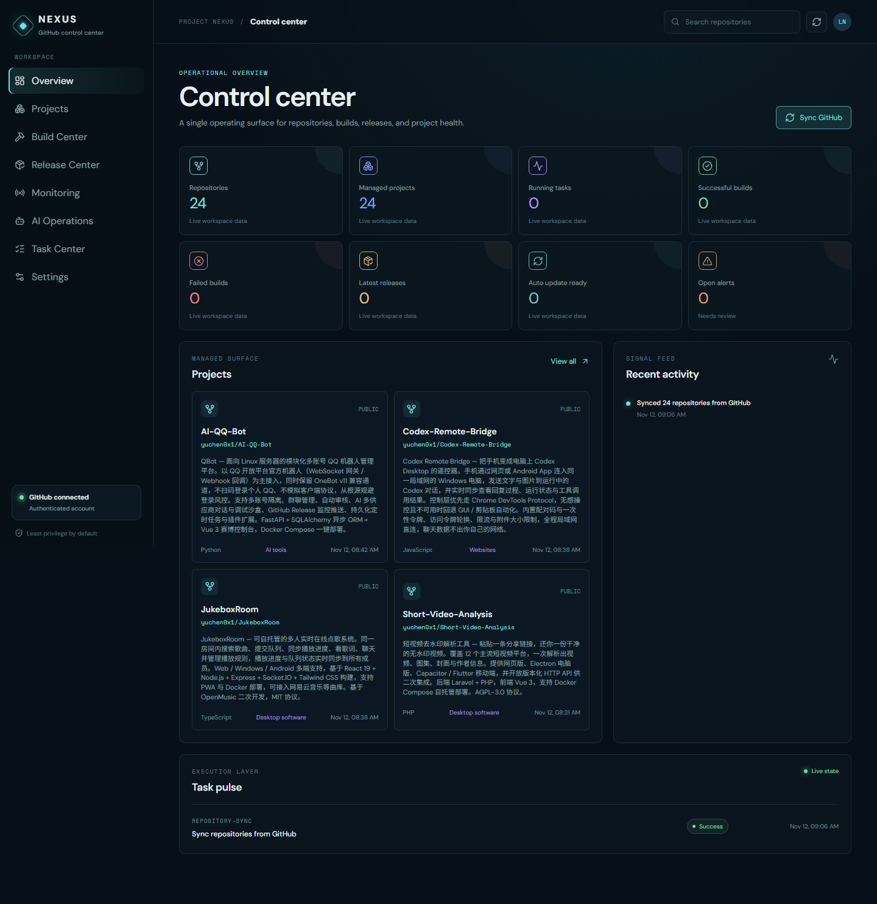

Windows 桌面 AI 仓库运营中心 —— 连接 GitHub 与 AI 网关，持续监控仓库，在隔离工作区中修复和验证问题，按授权策略交付 PR 和版本。

安装后自动打开七步教学，每一步说明位置、填写内容和完成条件，失败可原地重试。
连接 GitHub、配置 AI、选择仓库、检测本机工具、设置策略，逐步引导；工作台随时可重看教学。
勾选多个仓库统一开启托管，逐仓库显示进度；归档仓库自动隐藏，状态一目了然。
Issue 巡检、分类，符合条件的进入修复流程：在隔离工作区修改、运行真实测试、独立审查后按策略交付。
脚本执行、远程写入、合并发布都需要你逐项授权；未授权的操作不会发生，也不会替你勾选。
设置中一键检查更新，版本按数值排列；下载校验后安装，本地服务随更新恢复。
简体中文、English、日本語等十种语言，深浅色与系统主题跟随，语言切换即刻生效。
所有远程写入动作都以策略和授权为准，观察模式不会碰你的仓库。
| 策略 | 行为 |
|---|---|
| 观察 | 监控、分析、报告，不自动修复 |
| 自动维护 | 隔离修复，验证后按策略推送分支和创建 PR |
| 全自主 | 还允许在验证与发布检查后合并、发布和条件关闭 Issue |
Windows 10 / 11 x64 · 0.8.2 及以上版本支持应用内「检查更新」直接升级
安装包大小与 SHA256 校验值见 发布页，下载后请核对校验文件。